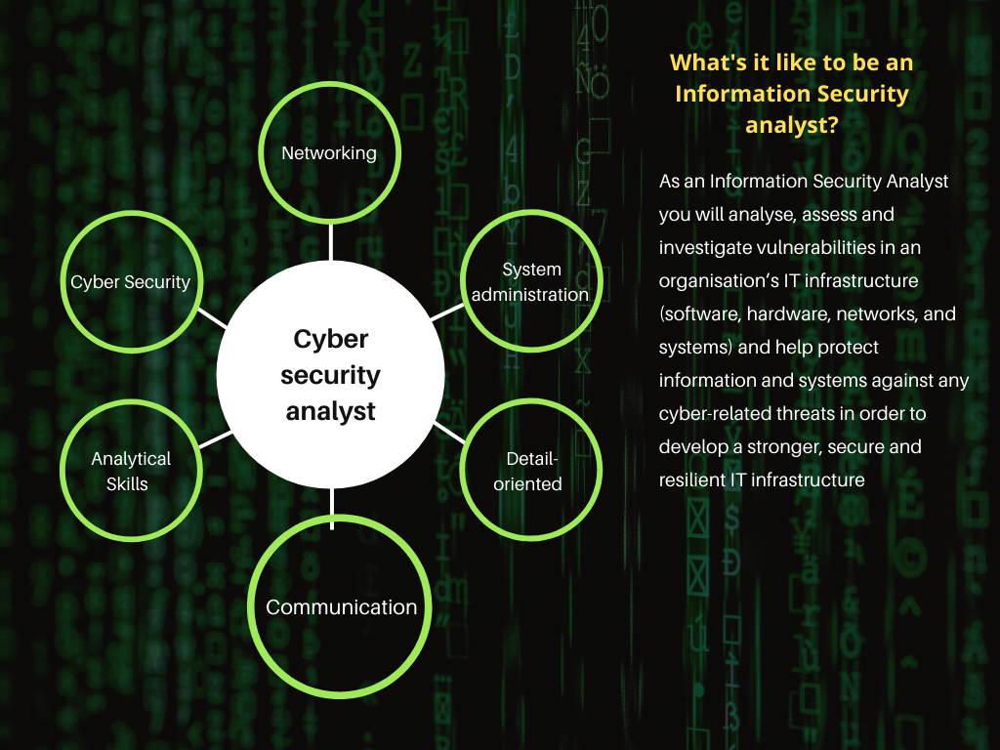
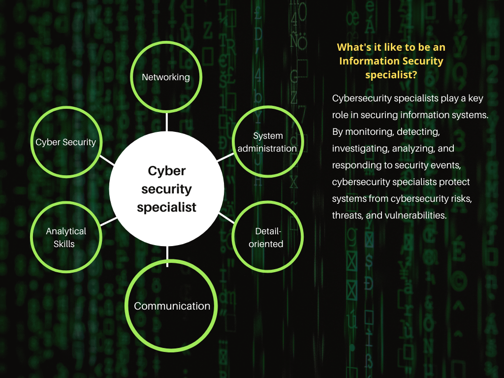
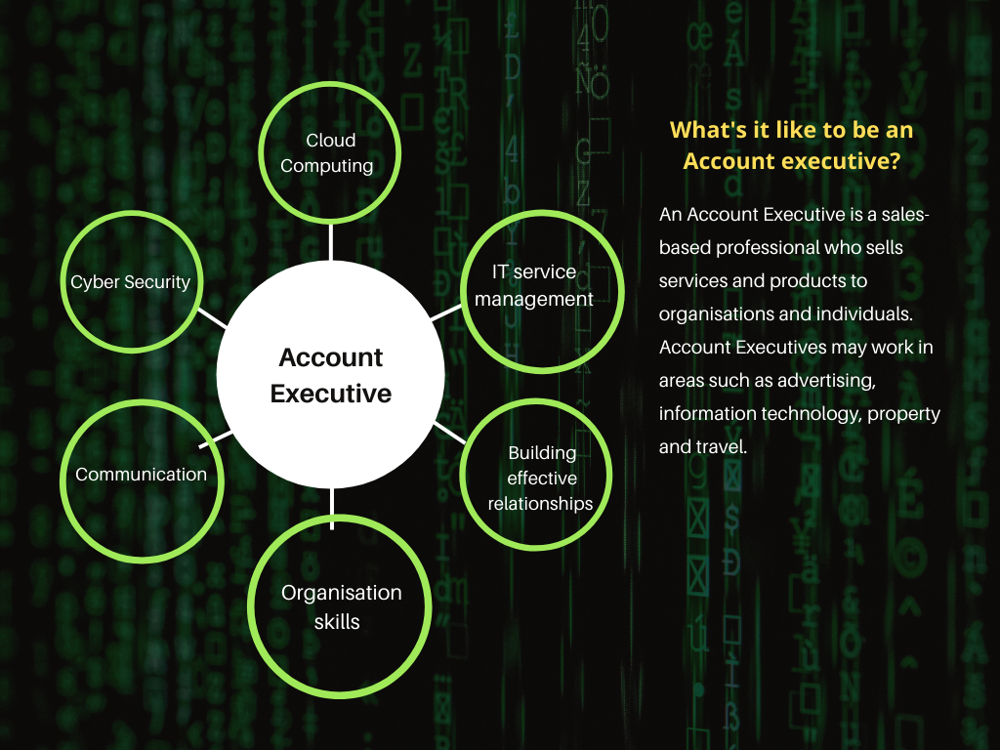
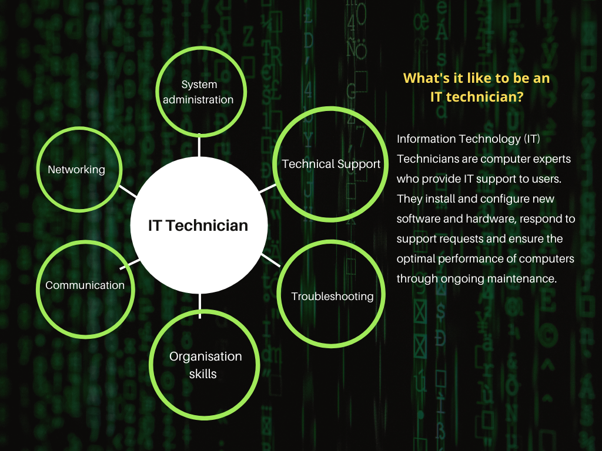
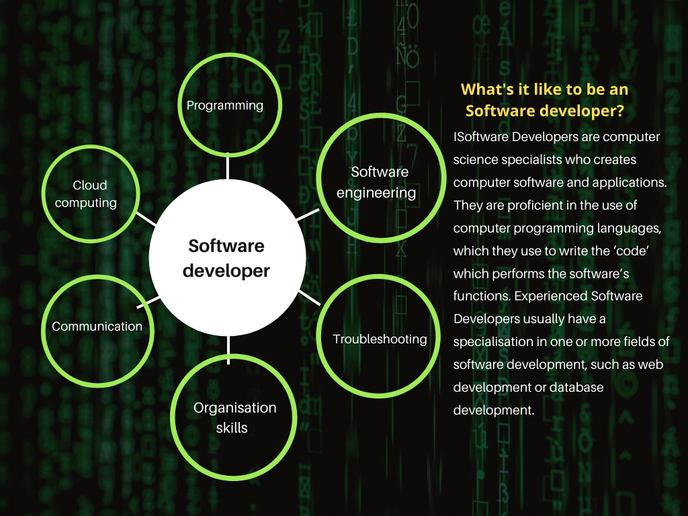

Student ID: s3915785
Student email: s3915785@student.rmit.edu.au
"I come from an English-speaking family of English & Australian ancestry. In my spare time, I enjoy computer gaming and gardening. I think my interest in IT was really piqued when cybersecurity started to become a more household term, due to an increased occurrence of cyber crime against both public and private organisations and an increasing number of large-scale cyber security events, such as the SolarWinds hack and the compromising of Microsoft Exchange email servers etc."
Individual profile
Student ID: s3899502
Student email: s3899502@student.rmit.edu.au
Individual profile
Student ID: s3894617
Student email: s3894617@student.rmit.edu.au
"My name is Nima. I'm from the Doncaster area and I do Bachelor of IT at RMIT University. I am interested in blockchain and I'm an investor in Ada Etherum and polygon and I want to use IT to one day in the near future develop something related to blockchain or make a meaningfull impact on the cybersecurity industry. I am also interested in MMA and plan to compete to challenge myself after finishing University."
Student ID: s3923487
Student email: s3923487@student.rmit.edu.au
IT Skills: Cyber Security, Networking, System administration
General skills: Analytical Skills, Communication, Detail-oriented
IT Skills: Cyber Security, Networking, System administration
General Skills: Analytical Skills, Communication, Detail-oriented
IT Skills: Cloud Computing, Cyber Security, IT service management
General skills: Communication, Organisation skills, Building effective relationships
IT Skills: Networking, System administration, Technical Support
General Skills: Communication, Organisation skills, Troubleshooting
IT skills: Cloud computing, Programming, Software engineering
General skills: Communication, Organisation skills, Planning
There are a few general IT skills shared between members- cyber security (Julian, Nima, Ishaan), networking (Julian, Nima, Tommy) and system administration (Julian, Nima, Tommy), cloud computing (Ishaan and Sam) . As a universally needed skill, communication is required by all members in their roles while organisation skills are more necessary for those with direct client interaction and / or work-loads that are managed according to deadlines or milestone targets.
The group has 3 members (Julian, Nima and Ishaan) who have roles focused on cyber security (or elements thereof) however the roles themselves are quite different- Ishaan’s role would be more based on product knowledge and sales (offering cloud services and security and IT service management services to clients), while Julian’s and Nima’s roles are more hands on, as their roles would involve direct application of cyber security skills and knowledge. Tommy’s role is also of a more practical nature, building PCs, setting up networks and performing fault troubleshooting across a variety of domains (PC hardware and software, wifi networks and email).
Sam is the only member whose role will focus on programming and software engineering, though it shares the same need for strong organisational skills as Ishaan and Tommy’s.
Ishaan and Tommy will have direct interaction with their clients whereas Julian, Nima and Sam would likely have little outside client interaction. Ishaan’s clients are likely to be large businesses while Tommy’s are likely to be small businesses or individuals.
Having the most similar roles, Julian and Nima have the most similar required skill sets and career path plans, aiming to complete study and begin working to gain cyber security experience and attaining relevant cyber security certification. With that said, each member has expressed the need to gain working experience in their relevant fields in order to be successful in applying for their listed role.
Group roles / job titles:
Cyber security analyst
Cyber security specialist
Account executive
IT technician
Software developer
According to Burning Glass data for top IT roles (for 2017);
According to Burning Glass data for top IT roles (for 2018);
According to an article by ZDNet (Alison DeNisco-Rayome, 2017), of the top 10 in demand IT roles for 2020;
On SEEK as of 08/09/2021 (under the “IT” classification), each job title had the following number of jobs listed (ranked highest to lowest);
According to forecasts by the Department of Education, Skills and Employment (2020 Occupation projections), by 2025;
Group IT skills:
Cyber Security
Networking
System Administration
According to the Burning Glass IT skills list (for 2017);
According to the Burning Glass IT skills list (for 2018);
According to a web article by Global Knowledge (Ryan Day, 2020) regarding top 10 most in-demand IT skills (for 2020);
According to a blog by ITCareerFinder (Leslie Stevens-Huffman, 2021) regarding top 10 most in-demand IT skills (for 2021);
Group general skills:
Communication
Organisation skills
Detail-oriented
According to the Burning Glass data generic skills list (for 2017);
According to the Burning Glass data generic skills list (for 2018);
According to a blog by Adecco (Adecco, 2020);
According to an article by LiveCareer (Jacob Share, 2021);
Julian
“Having reviewed the Burning Glass data, my thoughts on my ideal role (cyber security analyst) have not changed- this is due to other sources consistently indicating that cyber security skills are in high demand and that the cyber security industry is set to continue to grow, along with the number of security analyst roles.”
Ishaan
“After examining the information and data shown by Burning Glass, my opinion, regarding my ideal job in the future, has not changed. This is because I strongly consider the cyber and cloud sectors of the IT industry to be ever-developing fields in the future, as the reliance on Cloud in society continues to grow.”
Nima
“After looking at the data presented by Burning Glass and the data gathered by our team, my view regarding my ideal job has not changed. I believe that my enthusiasm and problem-solving abilities will make the cyber security space ideal for me. The industry is also a growing industry with promising new positions offered every day at credible companies offering job security with relatively high income which makes my ideal job even more appealing to me.”
Sam
“After looking at the data provided by Burning Glass, my ideal job in my opinion still has not changed because software development in the IT industry is still growing and it’s growing fast with new technologies emerging in Mobile phones, AI, Robotic and many more fields.”